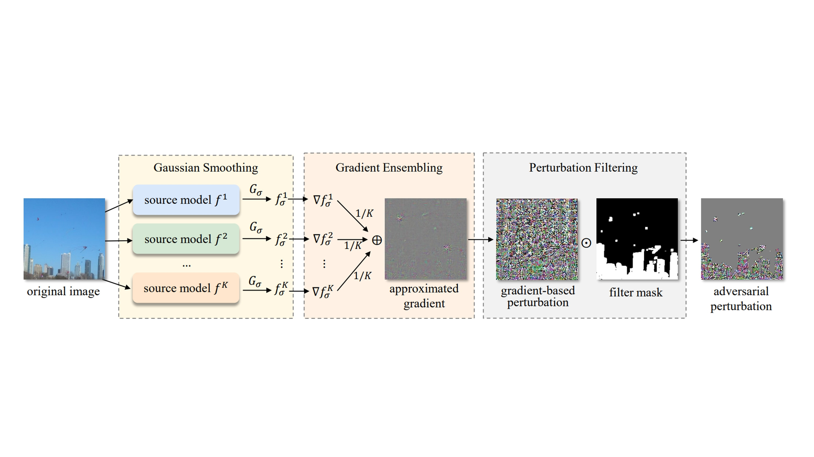
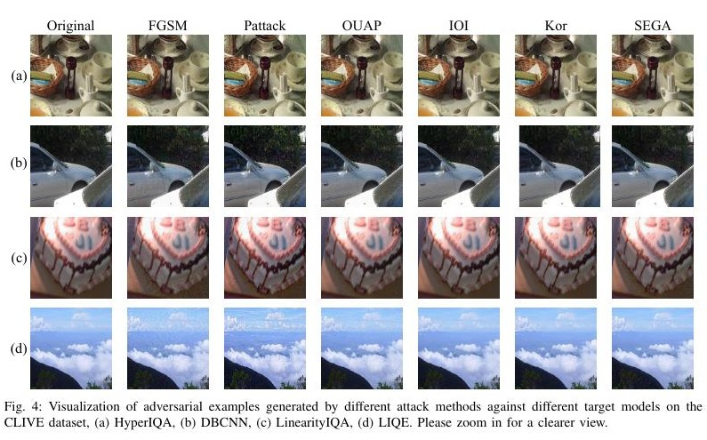
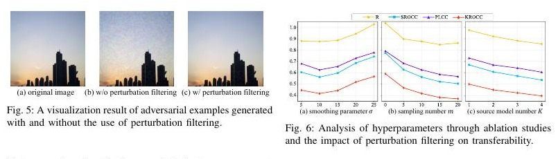

Abstract
Overview
No-reference image quality assessment models are vulnerable to adversarial examples, yet transfer-based black-box attacks remain difficult because different architectures learn dissimilar quality representations. SEGA improves transferable attacks through Gaussian-smoothed gradient estimation, source-model gradient ensembling, and a perturbation filter that suppresses visually conspicuous changes. Experiments across multiple NR-IQA models and datasets demonstrate strong transferability together with competitive perceptual quality.
01 · Figure
SEGA combines Gaussian smoothing, gradients ensembled from multiple source models, and content-aware perturbation filtering to improve black-box transferability while keeping adversarial changes less perceptible.

02 · Figure
Transferable and Imperceptible Attacks

03 · Figure
Perturbation Filtering

Citation
BibTeX
@article{liu2026sega,
title={{SEGA}: A Transferable Signed Ensemble Gaussian Black-Box Attack against No-Reference Image Quality Assessment Models},
author={Liu, Yujia and Li, Dingquan and Li, Zhixuan and Huang, Tiejun},
journal={IEEE Transactions on Pattern Analysis and Machine Intelligence},
year={2026},
publisher={IEEE}
}